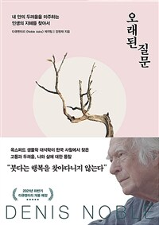

1

“What is Life?” 사는 게 왜 이리 괴로울까? 나는 누구인가? 마음은 어떻게 다스리는가? 어떻게 살아야 잘 사는 걸까? 우리는 답을 얻기 위해 심리학 책을 보기도 하고, 과학적 접근을 해보기도 한다. 하지만 크게 나아지지 않고 계속 헤맨다. 이 책은 삶과 존재에 대한 4가지 근원적 질문에 대해 세계적인 생물학자와 한국 대표 스님들의 대화를 통해 이제껏 본 적 없던 새로운 철학적 메시지를 전하고 삶의 본질을 발견하는데 도움이 되는 방법을 제시한다.